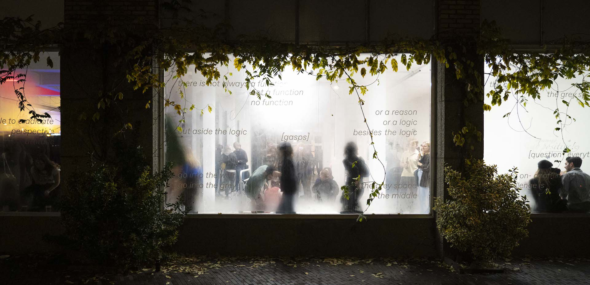

Type:
Year:
With:
Guided by:

EXPLANATION

Type: Book Design
Year: 2023
Technologies: Natural Language Processing (NLP), Adobe Indesign
Guided by: Phil Baber

In the initial iteration of this book, where the text was typeset
using a Compugraphic machine, an unusual phenomenon occurred: the
words would seemingly vanish under the heat and humidity of
summer. However, a significant transformation took place in 1975
when "Behind the State Capitol" was re-imagined and retyped on an
IBM machine. This process gave rise to a captivating narrative
within the text, as grammatical, lexical, and formatting mishaps
emerged. These unintentional errors added an intriguing layer to
the overall composition.
The revised publication serves a specific purpose: to explore and
comprehend the limitations of modern technologies and their
influence on our understanding. It delves into the realm of
language compression tools, envisioning the text as a blurry JPEG
representation of all the information. Similar to how a JPEG
retains much of the essence of a higher-resolution image, this
representation retains much of the information available. However,
it is important to note that if one seeks an exact sequence of
bits, they will only find an approximation. To further push the
boundaries of this exploration, the text has undergone
lemmatisation-a process that reduces words to their base or root
form. However, the focus is placed on words not present in the
Celex dictionary, allowing an exploration of their orthography,
phonology, morphology, and syntax. By highlighting these unique
linguistic elements, the book encourages readers to engage with a
more nuanced understanding of language and its diverse forms.
This revision of "Behind the State Capitol" engages with the
interplay between technology, language, and perception. It
challenges readers to question the boundaries and expectations set
by conventional forms of communication and invites them to delve
into the richness and complexity of linguistic expression.
Type: Quadrophonic Sound Piece
Year: 2023
Technologies: Field recording, Max/MSP, Ableton
With: Inge Maria Maier
Guided by: Louis Braddock Clarke
Type: Character Creation
Year: 2023
Technologies: Blender
Guided by: Kévin Bray, Diego Grandry

There was a man named Edward who was lost after his parents died.
He found solace in games and believed it was a great way to
express himself. This passion led him to delve into the world of
game design, where he created a character named Abi. Abi was
Edward's alter ego, a reflection of his struggles and emotions.
Through Abi, Edward told his own story and found a way to cope
with his loss. Along the way, he learned about the character
creation pipeline and what it takes to make a video game.

"My story begins at the dawn of time. My name is Abi and I live in
the Challenger Deep. I don’t really know who I am and where I come
from. Mum and dad have been away for a while; there was a blinding
light and they vanished. It’s dark here most of the time. I like
it, I feel safe. I fend for myself. When I’m hungry my esca turns
on, it faintly lights up my surroundings and my appetite
disappears. As time passes, I can feel my body expanding, my esca
shines brighter and I see further. Maybe it’ll help me find my
parents."

Type: Video, book
Year: 2023
Technologies: Adobe Premiere, Blender, risograph
With: Bartosz Pierściński
Guided by: Anna Hoetjes
Imagine hills and valleys. Imagine variety of terrain, rocks and
fallen logs. Imagine being able to freely choose your path through
this environment of hollers which regulate your manoeuvring?
What does it mean for humans to live in an environment regulated
by a rectangular grid? What does it mean to grow up in a city in
which you can freely move in approximately 15% of its surface? How
can we combat the feeling of artificiality in a heavily surveilled
urban space through play and make it an inclusive and illuminating
experience?
In general, games are critically important in establishing healthy
social interactions, and failing to play them can result in
inappropriate aggression, anxiety and social isolation. Play can
act as a release valve that allows people to feel a sense of their
own agency, and to make some kind of sense of their experiences on
their own terms.
When are playgrounds for children going to start to resemble
concrete urban landscapes? Why should we pay more attention to the
signs of the inevitable need of play in the urban space?
Because maybe through examining this act of freedom, we can learn
more about being free.

Special thanks:
“The Climbing of Buildings, Fences and other Opportunities” by
Jeroen Jongeleen
“Readymade Player” by William Britten
“Children’s Game #23: Step on a Crack” by Francis Alÿss
“Straight Line Mission” Video By Thomas George Davies
"Defensive Architecture Archive" by Nils Norman @dismalgarden.com
Type: Book design, sound piece, DIY sound system
Year: 2023
Technologies: Indesign, Ableton, woodworking
Guided by: Marthe Prins, Benjamin Earl

This book is an exploration of the ways in which our past
experiences shape our present reality. By examining the impact of
childhood experiences on perception and beliefs, it gives insights
into the interplay between my personal history and the world
around.

© Helena Roig
Drawing inspiration from the DIY Sound System movement, I
constructed a unique subwoofer and metal horn that are designed to
emphasise the intrinsic tonal qualities of sound. However, the
shape and form of these components play an equally important role
in shaping the sound that is heard.
The subwoofer's narrow but defined sound spectrum is due to its
design, which is intentionally poor in some respects. This design
choice brightens up specific frequencies while muffling others,
resulting in a distinctive and unusual sound that is unlike
anything produced by a conventional sound system. Meanwhile, the
metal horn's shape has been carefully chosen to enlarge the
sound's soundscape. The material used to construct the horn also
plays a crucial role in shaping the sound, creating a unique
resonating timbre.
The way a speaker is constructed affects the sound it produces,
much like how our upbringing shapes our personalities.

© Emilia Mäenpää
Type: Data Visualisation
Year: 2023
Technologies: Python, Microsoft Excel
Guided by: Vera van de Seyp
The maps exhibit the initial 1000 incidents of gun violence that
took place between 2013 and 2018, providing a concentrated
representation of where these incidents tend to occur. The aim is
to generate conversations and initiatives regarding gun violence
in these specific areas.
This website includes partial data extracted from
gunviolencearchive.org , an online repository of gun violence
events in the United States. By utilizing geocoding, the scraped
addresses were mapped using folium, a Python library, and
displayed on leaflet maps.
SELECT A YEAR:
2013
2014
2015
2016
2017
2018
Type: Interactive and narrative text-centric game
Year: 2023
Technologies: Inky by Inkle Studios, Photoshop, crayon
Guided by: Jakob Schlötter & Asya Sukhorukova

The small game I've developed is an interactive, text-based game
that is based on real-life interactions. game is based on
real-life interactions that feel like you're talking to a
non-playable character While players may feel like they have
control over the narrative at first, the game is intentionally
designed to throw them off guard with unexpected twists and turns.

On a splendid summer day I took my snail on a walk. Come to find
out I left my feet at the crib to iron the dishes because the
grass was blue, blue like the ocean. Remember when I mopped the
ocean? Come to find out I had to take my grandma to the vet
because the cat was barking?
Computer: Yes you are! Can you tell me time?

Player: I am not drunk!

Well, okay. Let me see here's the way I feel. I remember Pandorosa
episode I don't know is 60, 63. Paul came home, long day on the
ranch. Paul was mad. The boys weren't home. The boys were going to
be mad when they got home. And Paul, he likes to feel responsible.
And he said to Hopsing: “Hopsing, how come you don't even have
dinner ready to be put on the table?” And Hopsing said: “You
never, ever thanked me for making dinner.” Paul was flabbergasted.
He thought about it, and she was right. He never, ever told
Hopsing how much he enjoyed the food that she put on the table for
him and the boys. And he said, Hopsing, I'm flabbergasted. I think
you're right. I've never have ever told you how much I appreciated
you putting food on the table. But, it's not because I don't like
your food. And, certainly it's not because I don't like to have
you cooking the food for me and the boys, so you see Hopsing, I'd
be lost without you. You're like my shadow in the afternoon, when
I'm hungry and my shadow is long, you're there, right behind me
taking care of me, and you know what? I've never thanked my
shadow.
Type: Sculpture, video
Year: 2023
Technologies: Clay sculpting, 3d sculpting, metal casting, Adobe
Premiere
Guided by: Katrin Korfmann

In my work, I explore my roots through the diverse landscapes of my
homeland, Mauritius. I have sculpted Oiseau, a clay and metal
creature inspired by dozens of extinct birds that were once native
to the Mascarenhas Archipelago. Due to the region's geographic
location and centuries of colonialism, my artwork pays tribute to
the ethnic and cultural diversity of the Mauritian people.
Through the gaze of this hybrid creature he visits the stories of
colonialism, immigration and exploitation. he accompanying
soundscape captures the relentless pain and exhaustion endured by
African, Malagasy, and Indian slaves.
Ultimately, my artwork tells a story of human perseverance and
triumph in the face of adversity.
© Karolina Uskakovych
Type: Data processing, book design
Year: 2022
Technologies used: Clay sculpting, laser cutter, PureData, Ableton
Guided by: Lu Liang

The project is a book that explores my emotional response to
George Bataille's "Histoire de l'œil" through a secret language. I
reflect on the taboo and secretive nature of the book and how
secret messages were historically transmitted, such as through
Morse code. I also created a new secret language to communicate
with others and present Morse code as a language that could be
revitalized.
The book takes shape through multiple steps. In the first step, I
created my own interpretation of Morse code, where each letter
corresponds to a specific frequency played for a certain amount of
time. Next, I created sound pieces based on this Morse code
interpretation. Listeners were then given a pen and paper to
represent the sounds they heard, resulting in an analog
representation of cymatics.
Through this project, I wanted to highlight the importance of
understanding the stories behind sound and how they can be used to
communicate in a way that is meaningful and intentional.
Ultimately, my book seeks to inspire readers to engage with sound
in a new way and appreciate the power of non-spoken languages in
communication.

Type: Digital Painting
Year: 2020
Technologies: Photoshop, felt pen
Guided by: Kévin Bray